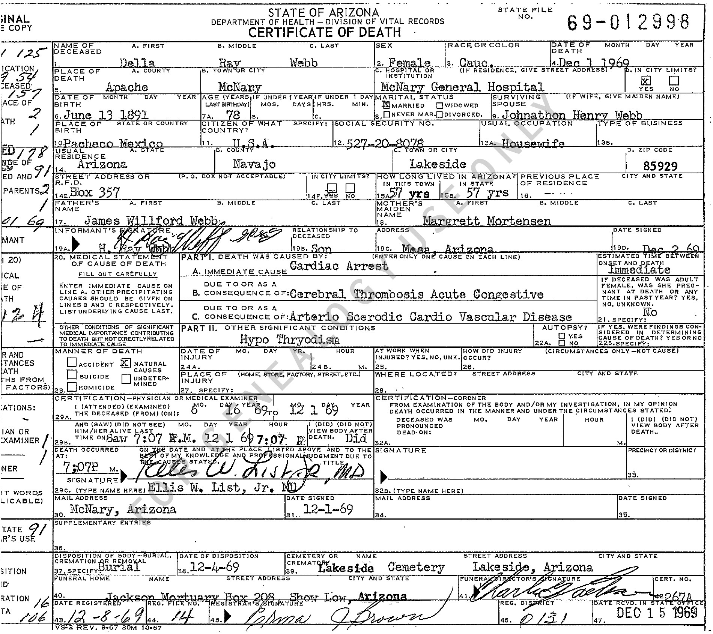

State file no.: 69-012998 1. Name of deceased: Della / Ray / Webb 2. Sex: Female 3. Race or color: Cauc 4. Date of death: Dec 1 1969 5A. Place of death — county: Apache 5B. Town or city: McNary 5C. Hospital or institution: McNary General Hospital 5D. In city limits?: YES [checked] 6. Date of birth: June 13 1891 7A. Age (years last birthday): 78 7B–D. Months/days/hours/minutes: [blank] 8. Marital status: MARRIED [checked] 9. Surviving spouse: Johnathon Henry Webb 10. Place of birth: Pacheco Mexico 11. Citizen of what country?: U.S.A. 12. Social security no.: 527-20-8078 13A. Usual occupation: Housewife 13B. Type of business: [blank] 14A. Usual residence — state: Arizona 14B. County: Navajo 14C. Town or city: Lakeside 14D. Zip code: 85929 14E. Street address or R.F.D.: Box 357 14F. In city limits?: YES [checked] 15A. How long lived in Arizona? In this town: 57 yrs 15B. In state: 57 yrs 16. Previous place of residence: [no substantive entry; faint marks] 17. Father's name: James Willford Webb 18. Mother's maiden name: Margrett Mortensen 19A. Informant's signature: [handwritten, appears H. Ray Webb; overlapping type/signature] 19A. Typed informant: H. Ray Webb 19B. Relationship to deceased: Son 19C. Address: Mesa Arizona 19D. Date signed: Dec 2 69 20. Medical statement of cause of death Part I, A. Immediate cause: Cardiac Arrest Estimated time between onset and death: Immediate B. Due to or as a consequence of: Cerebral Thrombosis Acute Congestive C. Due to or as a consequence of: Arterio Scerodic Cardio Vascular Disease [sic; apparent typed wording] Part II. Other significant conditions: Hypo Thyroidism 21. If deceased was adult female, was she pregnant?: No 22A. Autopsy?: NO [checked] 22B. Findings considered?: [blank] 23. Manner of death: NATURAL CAUSES [checked] 24A–28. Injury particulars: [blank] 29A. I attended (examined) the deceased (from/on): 6 16 69 to 12 1 69 29B. And saw (did not see) him/her alive last: Saw 7:07 P.M. 12 1 69 29B. Hour of death: 7:07 P. 29B. Viewed (did not view) body after death: Did Death occurred at: 7:07 P M. Physician signature: [handwritten, appears Ellis W. List, Jr. MD] 29C. Type name here: Ellis W. List, Jr. MD 30. Mail address: McNary, Arizona 31. Date signed: 12-1-69 32A–34. Coroner certification: [blank] 36. Supplementary entries: [blank] 37. Disposition of body: Burial 38. Date of disposition: 12-4-69 39. Cemetery or crematory name: Lakeside Cemetery 39. Street address or city and state: Lakeside, Arizona 40. Funeral home: Jackson Mortuary Box 209 Show Low Arizona 41. Funeral director's signature: [illegible] 42. Cert. no.: 2674 43. Date registered: 12-8-69 44. Reg. file no.: 14 45. Registrar's signature: [illegible] 46. Reg. district: 015 47. Date received in state office: DEC 15 1969 Form: VS-2 REV. 9-67 30M 10-67 Left-margin administrative entries: labels partly clipped in original; visible numeric entries include 1 125; 2 54; 157; 2; 1; 78; 91; 2; 01 69; 12 4; 91; 116; 116. No semantic interpretation assigned to those marginal codes.